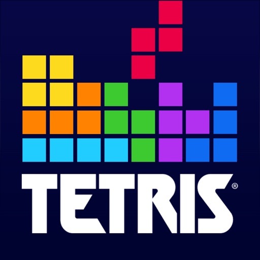

Tetris

Dieses Tetris-Projekt ist eine Umsetzung des klassischen Spiels Tetris in Java.
Es verwendet Arrays, um die Spiellogik und die Steuerung der Tetromino-Blöcke
zu realisieren. Die Implementierung nutzt die Grundstrukturen und Funktionen von
Java, um die Blöcke auf einem Raster zu bewegen und zu rotieren. Die Arrays dienen
zur Verwaltung des Spielfelds und der Positionen der fallenden Blöcke, wodurch das
bekannte Gameplay von Tetris nachgebildet wird.
Dieses Projekt bietet eine gute Einführung in die Spieleentwicklung mit Java und
demonstriert die Anwendung grundlegender Datenstrukturen in einem unterhaltsamen Kontext.
Direktlink zu Git-Hub Projekt.